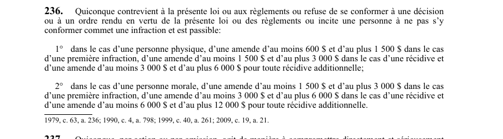

art-236-LSST : infraction générale et amendes
Un article du wiki ⚖️ Recueil législatif
En bref
Infraction générale de la LSST : le filet qui rend punissable n'importe quelle contravention à la loi ou aux règlements, quand aucun article pénal plus précis ne joue. Les montants sont des fourchettes, le juge fixe la somme.
- Trois conduites punissables, pas seulement la première : contrevenir à la loi ou aux règlements, refuser de se conformer à une décision ou à un ordre rendu sous leur autorité, ou inciter une personne à ne pas s'y conformer.
- Personne physique (1°) : 600 $ à 1 500 $ pour une première infraction, 1 500 $ à 3 000 $ en récidive, 3 000 $ à 6 000 $ pour toute récidive additionnelle.
- Personne morale (2°) : 1 500 $ à 3 000 $ pour une première infraction, 3 000 $ à 6 000 $ en récidive, 6 000 $ à 12 000 $ pour toute récidive additionnelle.
- Logique de l'échelle : le montant double à chaque palier, et le plancher de la personne morale égale le plafond de la personne physique au même palier.
- Les chiffres du texte sont historiques : les amendes sont revalorisées le 1er janvier de chaque année (art. 237.1), il faut donc consulter le barème courant de la CNESST.
🌐 LegisQuébec · 📄 PDF officiel (page 68)
Texte officiel : capture du PDF
{kind=link}

Toucher l'image pour l'agrandir🔗 Ouvrir a cette page : LSST.pdf : page 68 · texte a jour au 26 mars 2024
Voir aussi
- art. 234 : secret de fabrication protégé · disposition pénale : commet une infraction quiconque révèle ou divulgue, de quelque manière que ce soit, un secret ou un procédé de fabrication ou d'exploitation dont il prend connaissance à l'occasion de l'exercice des fonctions qui lui sont dévolues par la loi et les règlements.
- art. 235 : interdiction de fausse déclaration · disposition pénale : commet une infraction quiconque fait une fausse déclaration ou néglige ou refuse de fournir les informations requises en application de la loi ou des règlements.
- art. 237 : mise danger santé travailleur · disposition pénale : quiconque agit de manière à compromettre directement et sérieusement la santé, la sécurité ou l'intégrité physique ou psychique d'un travailleur commet une infraction passible d'amendes élevées.
- art. 237.1 : revalorisation annuelle des amendes · disposition pénale : les amendes prévues aux articles 236 et 237 sont revalorisées le 1er janvier de chaque année selon la méthode prévue aux articles 119 à 123 de la Loi sur les accidents du travail et les maladies professionnelles.
- ↑ Loi : LSST
Pages qui pointent ici (16)
- art-234-LSST : secret de fabrication protégé Recueil législatif
- art-235-LSST : interdiction de fausse déclaration Recueil législatif
- art-237-LSST : mise en danger sérieuse d'un travailleur Recueil législatif
- art-237.1-LSST : revalorisation annuelle des amendes Recueil législatif
- art-238-LSST : ordonnance judiciaire de conformité Recueil législatif
- art-239-LSST : responsabilité employeur actes représentants Recueil législatif
- art-6-RSSM : composition liaison antichute certifiée Recueil législatif
- Constat d'infraction Droit du travail
- Démarrage rapide - Direction et RH Recueil législatif
- Index par profil Recueil législatif
- Index thématique des décisions Recueil législatif
- Infractions et sanctions SST Droit du travail
- LSST Recueil législatif
- LSST : Chapitre VIII : Pénalités et infractions Recueil législatif
- Obligations de l'employeur Droit du travail
- Tableau des sanctions LSST (art. 234-242) Recueil législatif